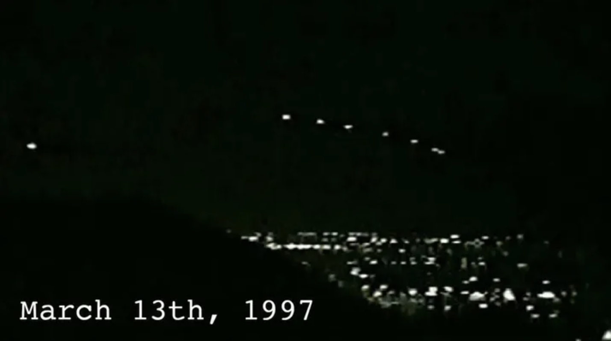

Well Done
Thousands of people witnessed
this incident in 1997.
While holding a conference, the
Governor at the time (Fife Symington)
ironically mentioned the matter,
but years later acknowledged he had
seen the UFO as well.
Fun fact: Kurt Russell, the actor,
was the first to report the sighting
while flying his own jet!
Picture from video footage during the
Phoenix Lights event.